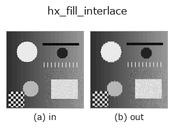

halcon_ext op• Datenarten: image → image
• Aufruf: fullseye.apply(img, "hx_fill_interlace", a=0.5, b=0.5) (das 2-D-Modell ist ein Bild plus zwei skalare Regler a,b∈[0,1])
• HALCON-Äquivalent: fill_interlace (Bedeutung und Parameter sind in der HALCON-Referenz nachzulesen)

*Die Abbildung ist die tatsächliche Ausgabe auf einer synthetischen 128×128-Eingabe. Links Eingabe, rechts Ausgabe. Punktwolken als Draufsicht-Streudiagramm (Helligkeit = z), 1-D-Reihen als Linie, Volumen als Maximum-Projektion entlang z, Videos als mittleres Bild, komplexe Bilder als Betrag; Rückgabewerte, die kein Bild ergeben, werden als Werte gezeigt.*
*Regler a ändert die Ausgabe nicht (gemessen: identisch bei 0,1 / 0,5 / 0,9).*
*Regler b ändert die Ausgabe nicht (gemessen: identisch bei 0,1 / 0,5 / 0,9).*
Auf anderen Bildern (synthetische Szene / Foto / Münzen. Obere Reihe: Eingaben, untere Reihe: deren Ausgaben. Regler auf Standard):
▸ hx_fill_interlace: andere Eingaben (Doku-Website)
*Die 4. Spalte ist eine Farb-Eingabe (H,W,3). Dieser Op verarbeitet Farbe, ohne Kanäle zu vermischen (er faltet den Farbkanal nicht als dritte Raumachse).*
Interpoliert zwei Video-Halbbilder (ersetzt die ungeraden Zeilen durch den Mittelwert der benachbarten geraden = Deinterlacing).
Betrachtet 1 Bild als 2 Halbbilder aus ungeraden und geraden Zeilen und ersetzt die ungeraden Zeilen (1::2) durch den Mittelwert der benachbarten Zeilen darüber und darunter 0.5*(v[i-1] + v[i+1]). Gerade Zeilen bleiben unverändert. Die Ausgabe ist ein float-Bild in der Form der Eingabe.
• a, b werden nicht verwendet.
• Die Zeilen darüber und darunter werden mit np.roll geholt; bei gerader Höhe ist "unter" der letzten Zeile (einer ungeraden Zeile) daher die erste Zeile (nur die 1 Randzeile läuft zyklisch um).
Die einfachste lineare Interpolation, um den kammartigen Versatz von Interlaced-Video zu beseitigen; die Information des ungeraden Halbbilds geht verloren (die vertikale Auflösung sinkt auf die Hälfte). Welches Halbbild erhalten bleibt, ist nicht wählbar (es überleben stets die geraden Zeilen). Als Vorverarbeitung bei Verdacht auf Streifen in Zeilenrichtung vor ableitungsbasierte Ops wie hx_nonmax_dir setzen.
Randbehandlung: auf die gegenüberliegende Seite umlaufen (periodisch) (gemessen; tools/impl2/border_probe.py).
• Leitfaden zur Familie gallery2d_halcon_ext
• Katalog der Beispieldaten (Download-URLs / Lizenzen) — 2-D nutzt skimage.data (BSD/Public Domain) plus synthetische Bilder, 3-D nennt Download-URLs echter Datenquellen (Stanford, PDS, …).
• Herkunft und Literatur der Operatoren — die Quellen der Forschung/Verfahren, auf denen diese Operatorfamilie beruht.
• Der kanonische Algorithmus (Autor, Jahr) und seine Anwendungen stehen im Familienleitfaden oben.
Das Programm unten ist nachweislich lauffähig (gleiche Eingabe wie die Abbildung). In der Studio-Hilfe wird dieser Block zu Schaltflächen, die es sofort laden und ausführen.
hx_fill_interlace 0.50 0.50
▸ Diese Pipeline laden · Laden & ausführen
• gallery2d_halcon_ext — py -3.11 examples/gallery2d_halcon_ext.py
image als Eingabe)identity · gaussian · mean_box · bilateral · unsharp · median · min_filter · max_filter
halcon_ext)hx_gen_circle · hx_gen_ellipse · hx_gen_rectangle2 · hx_gen_checker_region · hx_gen_grid_region · hx_gabor · hx_fit_surface1 · hx_fit_surface2
*Provenance: ops.py — 2D Operator-Registry. Diese Notiz wird von tools/opdocs.py md erzeugt (nicht von Hand bearbeiten).*
© 2026 Kazufumi Furuse — Fullseye operator documentation. Licensed under Apache-2.0.